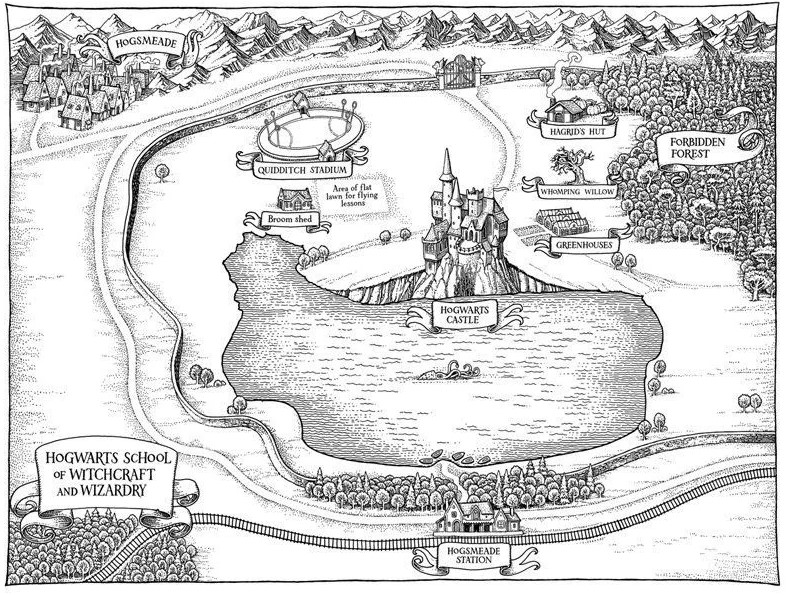
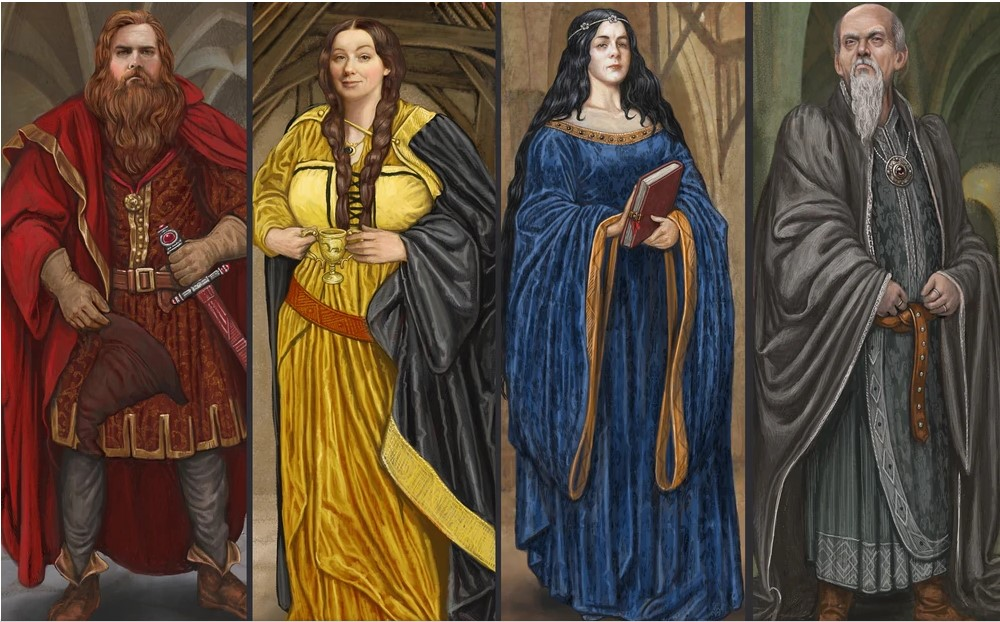

Hogwarts škola čar a kouzel, často zkrácena na bradavice, byla skotská Kouzelnická škola nacházející se v Skotská vysočina. Přijal každého magického studenta pobývajícího na ostrovech Velké Británie a Irska ve věku jedenácti let na začátku nadcházejícího semestru k zápisu. Byla to státní škola financovaná Ministerstvem kouzel. Přesné umístění školy nebylo možné nikdy odhalit, protože byla vykreslena jako nepřenosná. Mudlům se škola zdála být starým opuštěným hradem. Podobně byla chráněna umístění většiny kouzelnických škol, aby se zabránilo odhalení jejich způsobů výuky, a také chránit studenty a samotné školy před jakoukoli újmou. Založena kolem 10. století, bradavice byl považován za jeden z nejlepších magických institucí v kouzelnickém světě, ačkoli jiné pozoruhodné školy zahrnuty Beaux Bat akademie kouzel ve Francii, Durmstrang Institute předpokládal být v severní Evropě, a Ilvermorny Škola čar a kouzel ve Spojených státech. Děti s magickými schopnostmi byly zapsány při narození a přijetí potvrdilo owl post ve věku jedenácti let. Pokud však bylo dotyčné dítě narozené Mudlem nebo polokrevné jako Harry Potter bez znalosti kouzelnického světa, navštívil dítě a jeho rodinu zaměstnanec školy, aby je informoval o jejich magickém dědictví a existenci kouzelnického světa.